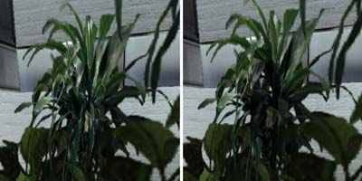
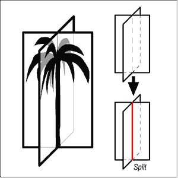
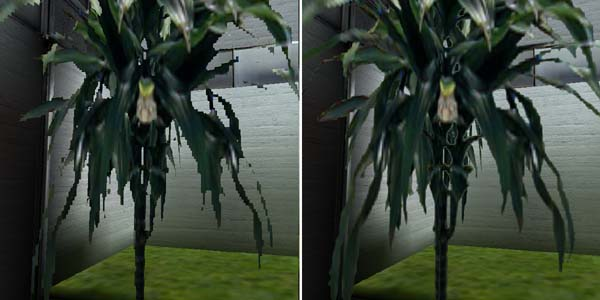
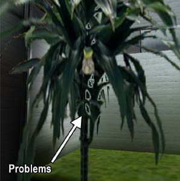
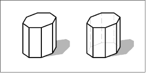
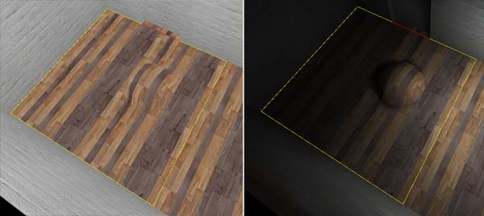
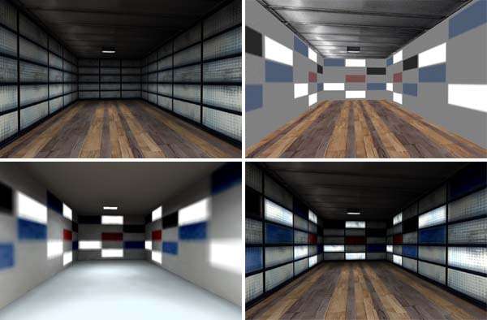

|
Advanced Texturing
With this article you are going to learn more issues mainly about texturing.
It is strongly recommended that you get yourself acquainted with basic MaxEd use. These
issues are covered in Basic tutorials section of this document.
Alpha texturing
Like any modern 3D engine, Max Payne technology supports so
called alpha blending. In alpha blending, another texture (called alpha
map) is attached to main texture to define the amount of transparency
desired for the main texture. Alpha maps are usually grayscale images
where the light value of the pixels defines the amount of transparency. In
MaxFX, white is fully opaque and black is fully transparent, and all the
tones of gray are in between with different levels of semi-transparency.
Using alpha map is easy. First you have to have a texture map
and a separate image to be used as the alpha map. When you make
your own textures, remember: Even if an alpha map is usually a
grayscale image, you can not use 8-bit JPEG (grayscale) format to save
your files, as MaxED can not open them correctly. If
you use JPEG format, use normal full color RGB format or even better, grayscale
PCX format. RGB JPEG images will not use the possible color data, only the value of the
pixels will affect the transparency.
To add an alpha map to texture, you have to right-click the main texture in the material
palette and select "Add alpha layer...". Then just browse and pick
up the appropriate texture map.
Once added, the thumbnail image of the texture visualizes the
amount transparency with diagonal striping showing through the actual main
texture. Now you can use the texture as usual in your modeling.
If the alpha map is of different proportions or resolution than the
actual main map, MaxED scales the alpha to fit the main texture. Generally
it is best to keep the maps same size.
The biggest problem with alpha blending is that they can not be sorted
with Z-buffer. Instead, a separate sorting algorithm has to be applied to
alpha polygons and this is very slow, a single alpha blended polygon can
take as much time as drawing hundreds of normal polygons. Furthermore,
the sorting algorithm is not perfect. Especially when alpha blended
polygons "cross" it might make wrong decisions and the polygons
would be drawn in incorrect order, bringing something that is supposed to
be behind to "pop" in front of something else.

Here we have a classic low-polygon-yet-complex-looking-plant, which is constructed by placing two alpha blended
polygons with profile of a plant into cross like shape. Atypical
problems with "normal alpha" sorting are clearly visible (see
the middle of the plant). Like in here, even a small change in the
viewing angle might make the polygons pop in front of each
other and back again especially where the polygons cross.

To help the sorter, you can split the polygons from
the crossing point. This usually brings good results, but produces also
a lot more polygons to be sorted, which again is very bad speed-wise.
Alpha test
You can find a menu item called alpha test from the
material pop-up palette, which can be turned on or off for alpha blended
materials. The name, alpha test, refers to the technique which is used
to determine the transparency of the alpha blended pixels. To fully
understand the the difference between "normal" alpha and alpha test requires some
extensive technical explanations which we'll skip now.
However, in short, alpha test is originally designed to be used with
alpha maps which have clear on/off situation, like a row of bars or wire
fence. The good thing about alpha test is that they are sorted with
Z-buffer, which makes them very fast to draw, pretty much as fast as any
opaque polygon drawing and also no popping like in
traditional alpha should occur.
What is special about alpha test inside Max-FX is that you have a
chance to set the alpha test reference value. That is the grayscale
(0-255) value which is used to determine the threshold, i.e. the value
where the alpha is considered as fully opaque or fully transparent in
sense of the sorting. You
can set this value as general value in MaxEd from the local preferences.
Inside game, this value is checked from the materials.txt file and it can
be separate for each material category.
Interesting here is that alpha test reference value does not simply define an absolute value where the transparency is on or
off. For example, if we set the reference value to 128, the values below
it will be cut off (not drawn), but the values between 128-255 are
semi-transparent as usual. So, what is the problem? Why not turn the
reference value all the way down to 1 and have the full scale of
transparency in use?
On top of normal geometry that would work -- the "absoluteness" of the
value is mostly visible when two alpha test -textured polygons go on top of
each other. Because the way Z-buffer operates, having two alpha
polygons on top of each other might "overshadow" the one
behind and even the lightest transparency might leave the further alpha
test indrawn. Study the pictures below to learn more.
Note: As said, MaxED shows all materials using the same reference
value, which can be adjusted from the local preferences. Remember, that
MaxED can not change the alpha test ref -value runtime, you change only
takes effect after quitting and restarting MaxED.

Here on the left you see an example of alpha blended plant
(alpha
test on, of course) with high reference value (254). This plant is not
an good example of proper use of high threshold, as the plant with it's
curved forms requires much bigger resolution for the alpha map, which
also is not designed with this level of threshold in mind. However, it demonstrates
how there is no semi-transparency visible. With this threshold, orthogonal
metal bars or a very systematic wire fence with much smaller unit size
(thus higher resolution) would be much better example.
On the right is the same view with medium alpha reference
value of 128 which seems to be bring very good results: the plant seems
to have much higher resolution, it blends to the background to some
extent and even consecutive
alpha maps do not bring too obvious "rims" (see below).

Here above we have the same plant again with low alpha
test reference value (5). This introduces "no-draw rims" to
some areas where consecutive alpha maps are visible (as you see, the blending with normal geometry
works perfectly with nice semi-transparency). The arrow points to
problems that might occur and sometimes seem very obvious: the drawing order of
the two transparent polygons
inside the Z-buffer makes the first alpha test polygon to overshadow
the drawing of the second alpha map, which does not "kick
in" before the alpha map reaches the value below the reference
value of 5. This problem is visible only when the polygons happen to be
in certain order. In the middle the polygons cross and and the left side
works correctly (as the drawing order changes).
Naturally it is always best to try to avoid semi-transparency and consecutive
alpha test polygons. How big of a problem it really is, depends. If, for instance, you have an alpha test blended window
and you look through it to to a room filled with alpha test plants, by
chance, they might be drawn in the right order and look perfect, or then
the plants might completely disappear. Unfortunately there is is no way to
know or control in which order the polygons are drawn in Z-buffer and
how they might or might not overshadow each other.
So, to the question "Should alpha test be on?" Answer is "Yes, almost always".
The fact is, that you are mostly better off with alpha test because of
the speed and sorting being solved. And as long as you do
not place many lightly opaque alpha mapped polygons with low reference
values into same room, you should not even see much drawing problems and
they mostly are much less obvious than the annoying sorting problems of the normal alpha
blending.
Alternative blending methods
In addition to alpha blending and alpha test, Max-FX offers two more
possible ways to do a sort of a transparency: additive and multiplicative
blending. Both blending methods can be assigned to a polygon that has any
material (except with already alpha blended texture). In other words,
multiplicative and additive are qualities of polygons, not
materials. If you are acquainted with some 2D graphics software, you might
know the blending methods with the names 'screen' for additive and
'multiply' for multiplicative.
Multiplicative blending can be assigned to a polygon by pointing
it in the F6 (texture) mode and by pressing M. In multiplicative
blending, the texture is mixed to background so that it can only darken
what is behind. The texture of the polygon is handled so that white is
fully transparent and black is fully opaque. The darker the color is, the
more it affects and if the texture has colors, each RGB channel affects
accordingly.
Additive blending can be assigned to a polygon by pointing it in the F6
(texture) mode and by pressing A. In additive blending, the texture
is mixed to background so that it can only lighten what is behind.
The texture of the polygon is handled so that black is fully transparent
and white is fully opaque. The paler the color is, the more it affects and
if the texture has colors, each RGB channel affects accordingly.
You can turn polygons with either blending methods back to normal solid
geometry by pointing it and pressing S. Neither multiplicative or
additive blended polygons have lightmaps usually returning to solid requires re-rendering of the
lightmap. You should also notice, that usually copy/pasting objects with
multiplicative or additive polygons will turn them into solid rendering
mode.
Dualsided or not?
Transparent materials are often used in places, where both front and
the back sides of the polygon should be visible. Rarely, you might also
create something non-alpha geometry, which you would like to appear to have both sides. In these situations, you
might consider tagging dualsided flag on by
right-clicking the texture. This will remove the backface culling from
that material, and in other words, make it to be rendered as
dualsided.
Polygons textured with dualsided material (alpha blended or not) have
lightmaps as any other polygons do, and the lightmaps are combined with main
texturing as usual. You should notice, that there is only one
lightmap, which is calculated during radiosity rendering according to the
normal of the polygon (just like the normal single sided ones). This might
sometimes raise lighting problems. Think of having an alpha blended dualsided wire fence in the middle of
a room where the other side of the room has all the light. If the normal
of the fence polygon is pointing towards the bright side when the
radiosity solution is rendered, the fence might appear too bright when the
player goes to see it from the darker side (or vice
versa, naturally).
The solution could be to take the dualsided flag off
from the material and manually construct two polygons on the same spot
with the other's normal pointing towards the dark side and the other to
the light side, thus producing a separate lightmap for both sides. In this
case, the dualsided can not be on, or these two polygons will interfere
with each other producing heavy-duty Z-fight.
Quite often happens that same material is needed sometimes
as dualsided and sometimes not. A good solution is to create a copy of the
material and have the other as singlesided and the other as dualsided.
MaxED can handle these multiple instances of an material without using
extra texture memory.

Would it not be useful to turn everything dualsided
and never worry the directions of the polygon normals? Here we have an
example: backface culling is very useful feature, as in average, half of
the polygons that make an object are automatically optimized. The object
on the left is single-sided, and only the polygons that are visible are
drawn. The object on the right has dualsided on, and all of it's
polygons are always drawn, even if that does not bring any visible
change. Dualsided polygons may also be problematic with collisions, as
the collisions are only checked against the polygon on the side that the
normal is pointing.
Planar mapping
In addition to more single polygon based texturing functions, MaxED offers the
possibility to use sometimes irreplaceable technique called planar
mapping. With planar mapping, you can project a texture to selected
group of polygons that can be in almost any angle. Imagine that you would
cast an image with a slide projector to an uneven surface and freeze that
image as a texture.
Planar mapping requires the desired polygons to be a part of a polygroup.
To define a polygroup, you have right-click the desired object (or a room)
in the hierarchy list and select create polygroup. A question is
presented where you have the chance to automatically include all the
polygons under that hierarchy into the polygroup. The polygroup object
appears under the object (or a room) that it belongs to and is sorted on
top of the list. After creation, the polygroup indicates the amount of
polygons currently in the group in brackets. You can select or deselect
only polygons that belong to object that the polygroup is directly
attached to or objects that are in the same level or lower in hierarchy.
Selecting and deselecting polygons happens by first activating the name of
the polygroup in the hierarchy list and then clicking polygons in texture
(F6) mode while pressing shift. Selected polygons are shown with green
translucent highlight.
After the desired polygons are selected, while the polygroup still
active in the hierarchy, press N to enter planar mapping mode (you
have to be in the F6 mode still).
Now doing usual texturing operations for one polygon affects all
polygons in the group. The direction of the planar mapping is the normal
of the polygon which you manipulate. You can rescale, rotate etc. As you might notice,
in some cases you may have to move the texture a bit for the texturing to
be updated in the other polygons. Avoid pressing LMB unintentionally, because
that will be considered as reset, and the mapping goes back to default
scale.
Here we have an example with a strange half-sphere bump on the
floor. The floor and the sphere have been assigned to a polygroup and when
the floor is textured in planar mapping mode, the same texture is
projected to the polygons of the sphere. Study the example level to learn
more. For instance, go to F6 mode, activate the polygroup from the list,
press N and move the texture on the floor.

More about polygroups
This is not actually a texturing issue, as polygroups can do some
other things too: They can be used to make the meshes appear smoother. This is
handy option especially for all round objects, like pillars, barrels or
spheres.
After selecting the smoothed surfaces with polygroup (for instance,
the sides of a barrel), right-click the polygroup name in the hierarchy
list and select smooth lightmaps to make the rendering (normal
rendering, preview will not work) to smoothen the lightmap edges to
appear more like the barrel would be truly round.
Sometimes, you might also want to make the mesh itself appear
smoother and then you can select Smooth geometry from polygroup
properties (right-click). This will not be visible inside MaxED, but the
game engine will create a subdivision surface solution of the surface
(the game's geometry detail level must be set to high).
You can study the different properties of subdivision by changing the
Set max angle and Set max edge length values from the
geometry smoothing submenu (under the RMB menu of a polygroup). Max
angle basically will make the subdivision to occur, if some angle in the
polygroup area is more than the given value. Max edge length will make
the surface to be subdivided, if polygon edge is longer than the given
value.
Smooth surface can easily make very big amount of polygons, and you
should carefully think that where to use it and to what extent. Although
subdivided polygons are not very expensive rendering-wise, each polygon
added brings always a little more slowdown.
Light layer
Light layer is a small special feature in MaxEd, which was mainly
designed to help creating large outdoor buildings (at night with lit
windows). Light
layer is an additional texture which is attached to material, but it
is not something that
is applied in-game like lightmaps or detail textures. Light layer is
basically an additional mapping which can be used easily to modify
lightmaps by applying them after radiosity rendering in MaxED before
exporting the the level.
The light layer can be added to a material by right-clicking it from
the material palette and selecting Add light layer.... This let's
you pick a texture for the light layer. The light layer is visible and can
be modified in light layer rendering mode, which can be toggled prom the
preferences (Ctrl+P) or by toggling it from the numpad division (/) -key,
which cycles through different mapping methods.
You can use normal texturing operations to light layers (rotate, scale,
copy mapping coordinates etc.). Note that it can be of completely
different proportions than the main texture. Usually, for large outside
buildings, it is wise to make light layer to repeat much less (ie. larger)
than the actual texture, to give the sense of main texturing not tiling so
much.
Here we have a rendered room with a repeating light-like wall
texture (top left). A special light layer texture is made, attached and textured to the surface so that repeats only every
fourth time than the actual texture does (top right). Then, the light
layer is applied to the lightmaps (below left), which gives us the final
appearance (below right).

Light layer is calculated to the actual lightmap by either selecting
the single polygon in F6 mode and picking Add light layer to
lightmap. Alternatively by first selecting all the desired objects in F5
mode, then going to F6 mode and applying "add light layer to
lightmap" on one of the light layered polygons, like before, will add all
the light layers in all the objects that were
selected. This option is naturally available only if there is a light
layer in the texture that is pointed in the F6 mode.
Light
layer modifies the actual texture so that mid-gray does not change
anything, full white makes the lightmap texels completely white and black
completely dark. Any color values will also give similar results (ie. full
red will make the lightmap full red). Usually rather modest color changes from mid-gray will
give good effects. Study the example above and see how it affects the main texture once applied.
|